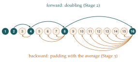

Suppose that \(a_i > 0\) for all \(i > 0\). Show that \[a_1 a_2 \leq \left( \frac{a_1 + a_2}{2} \right)^2.\] Prove by induction that for all positive integers \(m\) \[a_1 \cdots a_{2^m} \leq \left( \frac{a_1 + \cdots + a_{2^m}}{2^m} \right)^{2^m}. \tag{$*$}\] If \(n < 2^m\), put \(b_1 = a_1\), \(b_2 = a_2\), …, \(b_n = a_n\) and \(b_{n+1} = \cdots = b_{2^m} = A\), where \[A = \frac{a_1 + \cdots + a_n}{n}.\] By applying \((*)\) to the \(b_i\), show that \[a_1 \cdots a_n A^{(2^m - n)} \leq A^{2^m}\] (notice that \(b_1 + \cdots + b_n = nA\)). Deduce the (arithmetic mean)/(geometric mean) inequality \[(a_1 \cdots a_n)^{1/n} \leq \frac{a_1 + \cdots + a_n}{n}.\]
The hook
The arithmetic mean–geometric mean inequality (AM–GM) is perhaps the single most useful inequality in mathematics. It says that for positive numbers, the ordinary average is always at least the “multiplicative average”, with equality only when all the numbers are equal. It solves optimisation problems without calculus, it proves other inequalities, and it appears in every branch of analysis.
This question proves it by a strange and beautiful induction, due to Augustin-Louis Cauchy in 1821. Instead of going from \(n\) to \(n + 1\), it leaps from \(2\) to \(4\) to \(8\) to \(16\), covering only the powers of \(2\), and then comes back down to fill in the numbers in between. It is a reminder that “induction” is a much more flexible idea than the textbook version suggests.
Before you start
The version of this paper in the online archive has a misprint: it reads “\(b_1 = a_2\)”. It should of course be \(b_1 = a_1\), as printed above; the idea is that the \(b\)s are the \(a\)s, padded out with copies of their average.
Why might it be easier to go from \(2^m\) numbers to \(2^{m+1}\) numbers than from \(n\) to \(n + 1\)?
Because \(2^{m+1}\) numbers split naturally into two groups of \(2^m\), and you can apply the inductive hypothesis to each half and then use the two-number case to combine the halves. Going from \(n\) to \(n + 1\) gives you nothing so symmetric to work with.
Working it through
Stage 1 Two numbers
\(\left( \frac{a_1 + a_2}{2} \right)^2 - a_1 a_2 = \frac{a_1^2 + 2a_1a_2 + a_2^2 - 4a_1a_2}{4} = \frac{(a_1 - a_2)^2}{4} \geq 0.\)■
Stage 2 Doubling
The case \(m = 1\) is Stage 1. Suppose \((*)\) holds for \(2^m\) numbers, and take \(2^{m+1}\) positive numbers.
Split the \(2^{m+1}\) numbers into a first half and a second half, and let \(P\) and \(Q\) be the arithmetic means of the two halves. What does the inductive hypothesis say about each half?
Applying \((*)\) to each half, \[a_1 \cdots a_{2^m} \leq P^{2^m} \qquad\text{and}\qquad a_{2^m + 1} \cdots a_{2^{m+1}} \leq Q^{2^m}.\] Multiplying (everything is positive), the product of all \(2^{m+1}\) numbers is at most \((PQ)^{2^m}\). Now the two-number case gives \(PQ \leq \left( \frac{P + Q}{2} \right)^2\), and \(\frac{P + Q}{2}\) is exactly the mean of all \(2^{m+1}\) numbers. So \[a_1 \cdots a_{2^{m+1}} \leq (PQ)^{2^m} \leq \left( \frac{P + Q}{2} \right)^{2^{m+1}} = \left( \frac{a_1 + \cdots + a_{2^{m+1}}}{2^{m+1}} \right)^{2^{m+1}},\] which is \((*)\) for \(m + 1\). By induction, AM–GM holds whenever the number of terms is a power of \(2\).■
Stage 3 Filling the gaps
Now take any \(n\), and choose \(m\) with \(2^m > n\). We pad the list \(a_1, \ldots, a_n\) with \(2^m - n\) copies of its own average \(A\).
What is the average of the padded list \(b_1, \ldots, b_{2^m}\)?
The sum is \((a_1 + \cdots + a_n) + (2^m - n)A = nA + (2^m - n)A = 2^m A\), so the average is \(A\) itself. Adding copies of the average does not change the average. So \((*)\) applied to the \(b\)s gives \[a_1 \cdots a_n \cdot A^{2^m - n} \leq A^{2^m}.\]
Finish the proof.
Divide both sides by \(A^{2^m - n}\) (which is positive): \(a_1 \cdots a_n \leq A^n\). Taking \(n\)th roots, \[(a_1 \cdots a_n)^{1/n} \leq A = \frac{a_1 + \cdots + a_n}{n}. \qed\]
Looking back
Induction along a different path. Stage 2 is an induction on \(m\), covering \(n = 2, 4, 8, \ldots\) Stage 3 is a way of stepping down from any power of \(2\) to any smaller \(n\) (Figure 3.2.1).
Padding with the average. The trick of extending a list without changing its average is worth remembering; it is a way of turning a problem about any \(n\) into a problem about a convenient \(n\).
When is there equality? Tracing back through the proof, equality needs equality in every use of the two-number case, which happens only when all the numbers are equal.

What’s really going on
Cauchy published this proof in his Cours d’analyse (1821), the book that began the rigorous treatment of analysis we discussed in Chapter 2. The technique is now called forward–backward induction: prove a statement for an infinite sequence of cases (here the powers of \(2\)), and then show that the case \(n\) implies the case \(n - 1\). Together, these reach every \(n\). Our Stage 3 jumps straight down from \(2^m\) to \(n\), but you can also do it one step at a time: padding \(n - 1\) numbers with one copy of their average shows that the case \(n\) implies the case \(n - 1\).
Many proofs of one inequality
AM–GM has dozens of proofs, and comparing them is a good way to see different styles of mathematics.
By convexity. The logarithm is concave, so the average of the logarithms is at most the logarithm of the average. That is AM–GM after taking exponentials, and it is the subject of Section 3.3.
George Pólya’s proof. Use \(e^{x - 1} \geq x\) (the tangent line to \(e^{x-1}\) at \(x = 1\) lies below the curve). With \(A\) the mean, apply it to each \(a_i/A\) and multiply: \(\prod \frac{a_i}{A} \leq e^{\sum (a_i/A - 1)} = e^0 = 1\). Pólya said this proof came to him in a dream.
By smoothing. If two of the numbers are unequal, replace them both by their average. The arithmetic mean is unchanged and, by the two-number case, the product increases. Repeating pushes all the numbers towards the average.
Optimisation without calculus
AM–GM turns many optimisation problems into one-liners. Of all boxes with a given surface area, which has the largest volume? Of all rectangles with a given perimeter, which has the largest area? (A square, by the two-number case: \(xy \leq \bigl(\frac{x+y}{2}\bigr)^2\), with equality when \(x = y\).) The equality condition tells you where the optimum is, and the inequality tells you it really is the optimum, not just a stationary point. Compare the warnings of Section 3.1.
The thinking skill
Induction does not have to go \(1, 2, 3, \ldots\) You can induct along any path that reaches every case: by doubling, by strong induction, or forwards on a subsequence and then backwards to fill the gaps.
When the obvious step from \(n\) to \(n+1\) is hard, ask which step would be easy, and whether you can reach every case using it.
Try this next
One step back. Show directly that if AM–GM holds for \(n\) numbers, it holds for \(n - 1\) numbers, by padding with one copy of the average.
An increasing sequence. Apply AM–GM to the \(n + 1\) numbers \(1 + \frac1n, \ldots, 1 + \frac1n, 1\) (with \(n\) copies of \(1 + \frac1n\)) to show that \(\left(1 + \frac1n\right)^n < \left(1 + \frac{1}{n+1}\right)^{n+1}\).
The best box. A closed rectangular box has surface area \(S\). Use AM–GM on the areas of three different faces to show that its volume is at most \((S/6)^{3/2}\), with equality for a cube.
Harmonic mean. By applying AM–GM to the numbers \(1/a_i\), show that the harmonic mean \(\dfrac{n}{1/a_1 + \cdots + 1/a_n}\) is at most the geometric mean.
Further reading
J. Michael Steele, The Cauchy–Schwarz Master Class (Cambridge University Press). A wonderful, problem-driven book on inequalities, starting from exactly this level. Chapter 2 is about AM–GM.
Hardy, Littlewood & Pólya, Inequalities (Cambridge University Press). The classic reference, written by three of the great analysts of the twentieth century.
Arthur Engel, Problem-Solving Strategies (Springer). Chapter 7 is a large collection of inequality problems from olympiads.